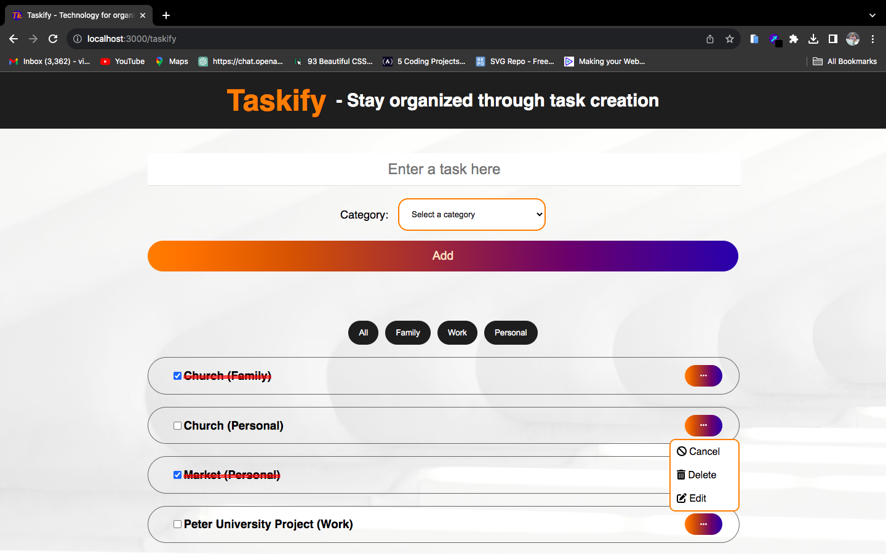
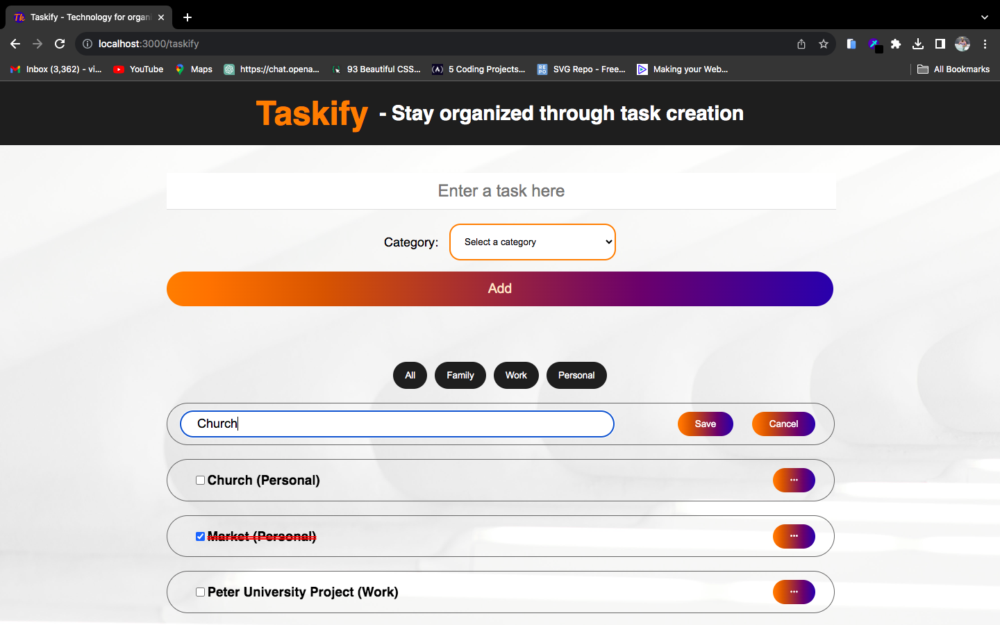

Project Info:
This is a task tracking app, for keeping track of your day to day activities. For the sake of better organization ease of access, I added filters to it. You can add, cancel, delete or edit tasks. It's so convenient for the user.